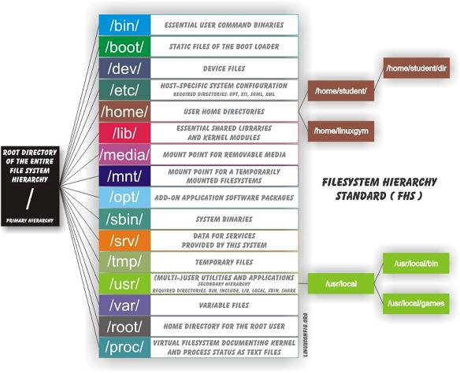

Basics of linux#
This is a huge chapter. I could divide it up in many subchapters but I like to have it all at one place so I can just do ctr-f, and search for whatever I am looking for.
1. The Shell - Bash#
The shell, or the terminal is a really useful tool. Bash is the standard shell on most Linux distros.
One really useful trick when working with bash is to search for old commands that you have used. You can access this search function by doing ctr-r in the terminal.
The configuration file for the bash shell is ~./bashrc
Navigating#
pwd - Print working directory
cd - Change directory
cd ~ - Change directory to your home directory
cd - - Go back to previous directory
Looking at files#
ls - List files in directory
ls -ltr - Sort list by last modified. -time -reverse
file - Show info about file. What type of file it is. If it is a binary or text file for example.
cat - Output content of file.
less - Output file but just little bit at a time. Use this one. Not more.
Use /searchterm to search. It is the same command as in vim. n to scroll to next search result. Press q to quit.
more - Output file but just little bit at a time. less is better.
Working with files#
touch - Create a new file.
cp - Copy
mkdir - Make directory.
# Make entire directory structure
mkdir -p new/thisonetoo/and/this/one
rm - Remove file
# Remove recursively and its content. Very dangerous command!
rm -rf ./directory
Watch the command destroy an entire machine: https://www.youtube.com/watch?v=D4fzInlyYQo
rmdir - Remove empty directory
A little bit of everything#
history - Show commands history
sudo
List what rights the sudo user has.
sudo -l
Sudo config file is usually /etc/sudoers
Finding files#
There are mainly three ways to find files on Linux: find, locate, and which.
Find#
Find is slower than locate but a lot more thorough. You can search for files recursively and with regex and a lot of other features.
# This will send all permissions denied outputs to dev/null.
find / -name file 2>/dev/null
# Search incasesensitive, that contains the word file.
find / -iname *file* 2>/dev/null
Locate#
Locate is really fast because it relies on an internal database. So in order to have it updated you need to run:
sudo updatedb
Then you can easily find stuff like this:
locate filename
Which#
Outputs the path of the binary that you are looking for. It searches through the directories that are defined in your $PATH variable.
which bash
# Usually outputs: /bin/bash
Creating custom bash functions#
If you want to create a new command from other commands, and be able to invoke that command from your terminal, there are a few different way of doing that.
One way is write a bash-script, and then move that script to one of your folders in your $PATH variable.
The other way is to simply write a function in your .bashrc file. You can then invoke that function from anywhere in your terminal.
So for example, if you want to ssh into a machine, but you are tired of having to write the whole command, you can just add this function in your .basrhrc file:
function connecttossh {
ssh user@192.168.1.111
}
Then you need to source the file, so that it becomes updated: source ./.bashrc
Now you can just writeconnecttossh and the function will be executed.
2. Editing text#
First let's just clear out something about standard streams, or I/O-streams. Standard streams are the streams that are used to interact between the human computer-user and the machine. There are three standard streams: standard input (stdin), standard output (stdout), and standard error (stderr).The stdin stream can be seen as an abstractions of the real keyboard input. So when you issue a command/program that requires input the program does not read straight from the keyboard input, instead it reads from the file STDIN.
Stdin#
Stdin is the data that gets inputed into the program. An example of a program that requires stdin data is cp. In order for the program to do anything it needs input data. For example cp file1 copy_of_file1. Here file1 and copy_of_file1 is the stdin.
So the default Stdin comes from the STDIN-file that is a text-file representation of the keyboard input. But often times we do not want to input stuff from the keyboard, sometimes we want to input something into a program that comes from another file. That is when we can use redirection symbol: >.
So an example could be cat < my_text_file.txt. The data from my_text_file.txt will now be used as input instead of the keyboard input.
The file descriptor for stdin is: 0
Stdout#
Stdout is the data that get ouputed from the program.
For example, when you use the command cat file1 that data/text that gets outputed is the stdout The same with the program ls. Not all programs have stdout. For example when you use mv or cp successfully you get no stdout back from the program.
The stdout can be redirected to another file by using these symbols > and >>. So now we can do the following:
ls > result_of_ls.txt
# now the result will be written to the file result_of_ls.txt
ls >> result_of_ls.txt
# This will append the data to the bottom of the file result_of_ls.txt
Another incredibly useful feature is the pipe feature, reprsented with this symbol |. It will take the stdout and redirect it into another program. Here is an example:
ls -la | less
This will take the stdout from ls -la and forward/redirect it into the less program. Using the pipe you can now chain different commands.
The file descriptor for stdout is: 1
Stderr#
Stderr is the stream used for outputting error messages. So if a program fails for whatever reason. For example, if we try to copy a file that does not exist, this will be the stdrr output:
cp thisfiledoesnotexist aaaaaaaaaa
cp: cannot stat 'thisfiledoesnotexist': No such file or directory
This is a common way for stderr to present itself, just straight out into the terminal. But sometimes stderr gets sent to a log file.
Stderr is useful because with it we can separate between stdout and stderr. However, to the eye it might be difficult to distinguish what output is stdout and what output is stderr.
One easy way to determine is the output is stderr or stdout is to simply redirect it into a file. Because by default you only redirect stdout, and not stderr.
cp thisfiledoesnotexist aaaaaaaaaa > result.txt
cp: cannot stat 'thisfiledoesnotexist': No such file or directory
# If we now look at result.txt we will find that it is empty. Since the error-text we recieved could not be redirected into the textfile, since it is stderr and not stdout.
Filters#
There are certain programs that are especially useful to use together with pipes. They can also be used as stand-alone programs but you will often see them together with pipes.
sort
sort test.txt
uniq
To remove any duplicated lines and output all lines but only once.
sort -u test.txt
sort test.txt | uniq
cat filename | sort -u > newFileName
grep
head
tail
tr
sed
Editing text#
sed#
Can perform basic editing on streams, that is to say, text.
Remove first line of file/stream
sed "1d"
cut#
Cut by column
This is a useful command to cut in text.
Let's say that we have the following text, and we want to cut out the ip-address.
64 bytes from 192.168.0.1: icmp_req=1 ttl=255 time=4.86 ms
cut -d" " -f4
-d stands for delimiter. and -f for field.
tr - Translate#
Transform all letter into capital letters
tr "[:lower:]" "[:upper:]" < file1 > file2
Example
Remove character
# Remove characters
cat file.txt | tr -d "."
# Remove and replace
# Remove all dots and replace them with underscore.
cat file.txt | tr "." "_"
http://www.thegeekstuff.com/2012/12/linux-tr-command/
awk#
So awk is an advanced tool for editing text-files. It is its own programming language to it can become quite complex. Awk iterates over the whole file line by line.
This is the basic structure of an awk command
awk '/search_pattern/ { action_to_take_on_matches; another_action; }' file_to_parse
The search pattern takes regex.
You can exclude the search portion or the action portion.
This just prints every line of the file.
awk '{print}' filename
Filtering out specific ip-address:
awk '/172.16.40.10.81/' error.log
Now we want to print out the fourth column of that file, we can just pipe this to cut, but we can also use awk for it, like this:
awk '/172.16.40.10.81/ {print $4}' error.log
# Another example
awk '{print $2,$5;}' error.txt
This prints columns 2 and 5.
We can use the -F flag to add a custom delimiter.
awk -F ':' '{print $1}' test.txt
So if you are manipulating some text you might want to start the output with some info about the columns or something like that. To do that we can use the BEGIN-keyword.
awk 'BEGIN {printf "IP-address \tPort\n"} /nop/ {print $3}' test.txt | head
awk 'BEGIN{printf "IP-address \tPort\n"} /nop/ {print $3} END {printf "End of the file\n"}' test.txt | tail
Here we are printing IP-address PORT to the first line of the file.
3. User management#
There are two commands to add a user in linux: adduser or useradd. adduseris a perl-script that facilitate the process, and useradd is the native linux binary.
To add a user we do:
adduser NameOfUser
useradd nameOfUser
To add user to sudo-group:
adduser NameOfUser sudo
usermod -aG sudo NameOfUser
You might have to reboot for it to take effect.
On some machines we might not be able to edit the sudoers file because we don't have an interactive shell, in this case can you can just redirect the text into the file, like this:
echo "username ALL=(ALL) ALL" >> /etc/sudoers
Check which users are in the sudo group:
cat /etc/group | grep sudo
Switch user in terminal:
su NameOfUser
Remove/delete user:
sudo userdel NameOfUser
4. Permissions#
ls -la
Shows all the files and directories and their permission settings.
drwxrwxrwt 2 root root 4,0K ago 3 17:33 myfile
Here we have 10 letters in the beginning. The first one d shows that it is a directory.
The next three letters are for read, w for write and x for execute. The first three belong to the owner, the second three to the group, and the last three to all users.
https://linuxjourney.com/lesson/file-permissions
5. Processes#
To display information regarding the systems processes you can use the ps command.
ps -aux
-a stands for all
-u stands for all processes by all users
-x stands for all processes that don't run a tty
If you run this command you will probably see a pretty big output. In the column for command you will see what command has been run. Every process has a Process Identification Number (PID). Something you will also see in the output.
All of theses processes can actually be found in /proc. You just go to /proc/[pid]. In /proc you can find information about the system, and you can actually change the system if you change those files! But more on that later. What I wanted to explain is that if we look at the output from ps we see that some commands are in brackets. Like this:
root 10 0.0 0.0 0 0 ? S ene14 0:00 [watchdog/0]
root 11 0.0 0.0 0 0 ? S ene14 0:00 [watchdog/1]
root 12 0.0 0.0 0 0 ? S ene14 0:00 [migration/1]
root 13 0.0 0.0 0 0 ? S ene14 0:00 [ksoftirqd/1]
Those are usually kernel processes, and you can safely assume that no user has started them.
If you want to monitor processes in real time you can use top or htop. top comes preinstalled on most distros. But htop is really a lot nicer.
For htop the F1-10 keys might trigger OS-events. So you can use the shortcuts instead.
Shortcut Key Function Key Description
h F1 Invoke htop Help
S F2 Htop Setup Menu
/ F3 Search for a Process
I F4 Invert Sort Order
t F5 Tree View
> F6 Sort by a column
[ F7 Nice (change priority)
] F8 Nice + (change priority)
k F9 Kill a Process
q F10 Quit htop
http://www.thegeekstuff.com/2011/09/linux-htop-examples/
6. Packages#
Something that difference Linux from windows is how it handles installing new software. In windows you usually have to google around and then click on random scary download buttons that might fuck up your computer, or not. It's like a constant lottery where you win by no installing malware. In Linux that is usually not really an issue. That is because distros have their own software repositories from where you can download your software. This is kind of like an app-store except everything is free.
The different major branches of teh GNU/Linux OS have their own software repositories. Ubuntu has their own, debian has their own, and so on.
Different distros also have their own package-amangers. For example, Debian and ubuntu uses apt, while Redhat uses rpm, and Arch uses pacman. You should strick to your own package-manager, because even though chaning package-manager is possible it will probably just cause you more headache than benefits.
Install package#
Example of how to install something with apt:
sudo apt-get install nmap
If you only have a .deb file you do this to install from the terminal:
sudo dpkg -i /path/to/deb/file
sudo apt-get install -f
Remove packages#
This can be tricky. First find the package
dpkg --list
Then you find it in your list.
sudo apt-get --purge remove nameOfProgram
When you remove some package it might have requires some other dependencies. To remove those you run
sudo apt-get autoremove
Organizing your $path variable#
I am talking about debian/ubuntu here. On other systems I don't know.
You can define your path in /etc/environment. If you don't have it you can create it and add the path like this:
source /etc/environment && export PATH
If you are using zsh (which you should) you have to add it here
sudo vim /etc/zsh/zshenv
And add this line somewhere:
source /etc/environment
Adding a path#
This is a non-persistent way to add binaries to your path. Might be useful if you have entered a system that has limited binaries in the path.
export PATH=/usr/local/sbin:/usr/local/bin:/usr/sbin:/usr/bin:/sbin:/bin
Installing custom packages#
If you download a package that is not in the official repository you can put the binary in /opt. That is good place to put your binaries.
Now you need to add that path to your path-variable. Remember how we set that in /etc/environment. So now open up that file and add /opt to it, so i looks like this.
PATH="/usr/local/sbin:/usr/local/bin:/usr/sbin:/usr/bin:/sbin:/bin:/usr/games:/usr/local/games:/opt"
I always add custom binaries last. That means that if we have two binaries with the same name the machine will first select the original binary. This way you won't have to fear screwing up, by accidentally creating a new ls binary for example.
7. Cronjobs#
There are two ways to configure cronjobs. The first one is by putting scripts in the following folders.
/etc/cron.daily
/etc/cron.hourly
/etc/cron.weekly
/etc/cron.monthly
The second way is to write the command in the crontab
# list cronjobs
crontab -l
# Edit or create new cronjobs
crontab -e
8. Devices/disks/partitions#
First some terminology. A driveis a physical storage device, just as a hard disk, solid state drive, or usb. In Linux these drives are represented as special file system objects called "device". They are found under /dev.A physical storage unit, a drive, can be divided up in to multiple logical storage units, these are called partitions. So they are just digital divisions of the drive. In linux a device are often named something like sda, sdb, sdc. And the partions of those devices are numbered. So one partion might be called sda1, and another sda2. These can then be found under /dev/sda1 and /dev/sda2.
You can view the devices and their partions with the command lsblk
Formating disks#
If you want to do it the easy way, just open gnome-disks.
To format disks we are going to use the program parted. It can be used with its own shell or by running commands. So you can just run parted, and you will enter the parted interface. But here we are going to run the commands instead.
# Make sure you know which device you are working with, they can change name between boots
lsblk
Partition standard
First we have to choose a partition standard. The modern and mostly used is gpt, and older is msdos.
# This will destroy all the data on the on the disk
sudo parted /dev/sda mklabel gpt
Create a new partition
sudo parted --align optimal /dev/sda mkpart primary ext4 0% 100%
This command creates a new partition (mkpart), which is of type primary, that takes up the space between 0-100%. Which means we will only have one partition.
Now you can see your new partition with lsblk.
Format the partition with a specific filesystem
Now that we have a partition we need to add a filesystem to it.There are many different types of filesystems. ext4 is common for linux. While windows uses NTFS, and mac uses HFS Plus. exFAT can be understood by all three OS:s, something that might be useful to USB:s.
# For linux
sudo mkfs.ext4 /dev/sda1
# Supposedly work on linux, mac and windows. But fails for me on my tests on Mac
sudo mkfs.vfat /dev/sda1
# To use UDF (universal disk format) that should also work on all OS
# You first need to install apt-get install udftools. Then you do:
mkudffs /dev/sda1
Remove partition
# if you want to remove partition 1
sudo parted /dev/sda rm 1
Mount it
Now you can just mount the parition somewhere on your filesystem
# Mount it
sudo mkdir /mnt/here
sudo mount /dev/sda1 /mnt/here
# Unmount it
sudo umount /mnt/here
List all devices
lsblk
fdisk -l
Encrypt a partition#
sudo cryptsetup luksFormat /dev/sda1
Mount an encrypted parition
cryptsetup open /dev/sda1 backup
Then you mount it:
mount /dev/mapper/backup /media/username/back
Change encryption passphrase#
First find out which device is the encrypted device:
lsblk
# In type you will see "crypt"
There are eight slots for passphrases. You can view these slots like this:
sudo cryptsetup luksDump /dev/sda3
Add a key:
sudo cryptsetup luksAddKey /dev/sda3
Remove a key:
sudo cryptsetup luksRemoveKey /dev/sda3
# You are then prompted to input the key/passphrase you want to remove
Formatting a USB#
In order to format a usb drive we have to do the following.
If you have stored sensitive information, or otherwise want to make sure that it is not possible to read removed files from the USB you can overwrite the usb (or any other kind of disk) with zeroes, or just random data. So we can start by doing that, however, first we need to know the device name of the usb.
First find out the name of the usb/device. We can to that by looking at the dmesg or tail -f var/log/syslog when we insert the usb. Another way is to run the command lsblk before and after inserting the USB. In my case the usb was called sda,, but for you it might be something else. Make sure you know exactly which device you are working with, otherwise you will completely detroythe wrong device. Then we need to unmount the usb.
sudo umount /dev/sda
Now we are ready to overwrite it with zeroes. It can be done like this:
sudo dd if=/dev/zero of=/dev/sda bs=1k count=2048 status=progress
Then we just write a new filesystem to the device:
sudo mkfs.ext4 -L "NameOfVolume" /dev/sda
ext4 works well with linux, vfat and ntfs should work with windows.
sudo mkfs.vfat -n "NameOfVolume" /dev/sda
Create bootable USB#
First find out the name of the device. Using dmesg, or lsblk, or something similar.
sudo dd bs=4M if=/path/to/input.iso of=/dev/sdX conv=fdatasync status=progress
That's it.
9. The Filesystem#
The Filesystem Hierarchy Standard#

This image is copied from here: http://askubuntu.com/questions/138547/how-to-understand-the-ubuntu-file-system-layout/138551#138551
Difference between sbin and bin#
sbin is system binaries. A normal user do not have access to these binaries. It is only root and users with sudo privileges that do.
pelle@mymachine:/bin$ ls -la /bin
total 4092
drwxr-xr-x 2 root root 4096 2012-02-04 19:12 .
drwxr-xr-x 21 root root 4096 2012-02-06 18:41 ..
--snip--
-rwxr-xr-x 1 root root 27312 2008-04-04 02:42 cat
-rwxr-xr-x 1 root root 45824 2008-04-04 02:42 chgrp
-rwxr-xr-x 1 root root 42816 2008-04-04 02:42 chmod
-rwxr-xr-x 1 root root 47868 2008-04-04 02:42 chown
-rwxr-xr-x 1 root root 71664 2008-04-04 02:42 cp
-rwxr-xr-x 1 root root 110540 2007-11-13 05:54 cpio
-rwxr-xr-x 1 root root 79988 2009-03-09 09:03 dash
-rwxr-xr-x 1 root root 24684 2008-04-04 02:42 echo
-rwxr-xr-x 1 root root 40560 2008-02-29 02:19 ed
-rwxr-xr-x 1 root root 96440 2007-10-23 16:58 egrep
-rwxr-xr-x 1 root root 22192 2008-04-04 02:42 false
-rwxr-xr-x 1 root root 5740 2008-02-06 17:49 fgconsole
-rwxr-xr-x 1 root root 53396 2007-10-23 16:58 fgrep
-rwxr-xr-x 1 root root 8796 2007-11-15 13:01 hostname
We have echo, cp, grep. The normal stuff a user needs.
In sbin we have binaries that control the system.
ls -la /sbin
total 5884
drwxr-xr-x 2 root root 4096 2012-02-04 10:01 .
drwxr-xr-x 21 root root 4096 2012-02-06 18:41 ..
-rwxr-xr-x 3 root root 23840 2008-03-27 13:25 findfs
-rwxr-xr-x 1 root root 20020 2008-03-27 13:25 fsck
-rwxr-xr-x 1 root root 15168 2008-09-26 08:43 getty
-rwxr-xr-x 1 root root 375 2009-12-10 10:55 grub-install
lrwxrwxrwx 1 root root 6 2012-02-04 09:51 halt -> reboot
-rwxr-xr-x 1 root root 69228 2008-03-28 18:26 hdparm
-rwxr-xr-x 1 root root 31620 2008-09-26 08:43 hwclock
-rwxr-xr-x 1 root root 61808 2007-12-13 05:51 ifconfig
-rwxr-xr-x 2 root root 27372 2007-09-19 20:25 ifdown
-rwxr-xr-x 2 root root 27372 2007-09-19 20:25 ifup
-rwxr-xr-x 1 root root 89604 2008-04-11 09:50 init
-rwxr-xr-x 1 root root 47448 2008-01-28 08:49 ip6tables
-rwxr-xr-x 1 root root 51680 2008-01-28 08:49 ip6tables-restore
-rwxr-xr-x 1 root root 51644 2008-01-28 08:49 ip6tables-save
-rwxr-xr-x 1 root root 10948 2007-12-13 05:51 ipmaddr
-rwxr-xr-x 1 root root 47480 2008-01-28 08:49 iptables
Mount#
So everything on the linux-filesystem belongs to some part of the filesystem-tree. So if we plug in some device we need to mount it to the filesystem. That pretty much means that we need to connect it to the filesystem. Mount is like another word for connect.
So if you want to connect a CD-rom or USB to your machine. You need to mount it to a specific path on the filesystem.
So if you plug in the usb it might be accessible at /dev/usb. But that it not enough for you to be able to browse the usb content. You need to mount it. You do this by writing
mount /dev/usb /media/usb
Or whereever you want to mount it.
So when you click on Eject or Safetly remove you are just unmounting.
umount /media/usb
Knowing how to mount and unmount might be useful if you want to get access to a remote NFS-directory. You will need to mount it to your filesystem to be able to browse it.
It is possible that the disk is not known as /dev/usb. If that is the case you can run
sudo fdisk -l
And see if you can find your device, and look for the address. Then you mount it like this (or with the correct path)
sudo mount /dev/sda1
Mount crypto-volume#
cryptsetup open /dev/sda1 backup
Then you mount it:
mount /dev/mapper/backup /media/username/back
Create your of filesystem#
In some cases it might be useful to create your own disk. Maybe for attaching to a virtual machine, or maybe to facilitate a backup. It is just a easy nice little container to have. It just requires two easy steps.
Create a chunk in memory
truncate -s 100MB nameOfFile
Attach a filesystem to file
mkfs.ext4 ./nameOfFile
Mount it to your filesystem
sudo mount ./nameOfFile /mnt/blabla
10. Controlling services#
Systemctl#
Systemctl can be used to enable and disable various services on your linux machine.
Start ssh
systemctl start ssh
systemctl status ssh
systemctl stop ssh
You can verify that the service is listening for connection by running network status.
netstat -apnt
Make ssh start upon boot
systemctl enable ssh
systemctl enable apache2
Init.d#
Init.d is just a wrapper around Systemctl. I prefer it.
/etc/init.d/cron status
/etc/init.d/cron start
/etc/init.d/cron stop
rcconf#
This is a tool to control services more easily, what is running upon boot and so on.
11. Kernel#
The Kernel is responsible for talking between the hardware and the software, and to manage the systems resources.
The Linux Kernel is a monolithic kernel, unlike the OSX and the Windows kernels which are hybrid.
You can find the kernel file in /boot. It might look like something like thisvmlinuz-4.4.0-57-generic. In the beginning of time the kernel was simply called linux. But when Virtual Memory was introduced they changed the name to vmlinux to reflect that the kernel could handle virtual memory. When the kernel later became too big it was compressed using zlib , therefore the name was changed to vmlinuz.
The Linux Kernel differs from Windows in that it contains drivers by default. So you don't have to go around looking for drivers like you do on windows when you want to install a printer, or something like that.
It is really easy to upgrade to the latest Linux kernel, all you have to do tis this:
sudo apt-get update && sudo apt-get dist-upgrade
# or
sudo apt-get update && sudo apt-get upgrade
If you are using a distro that is Long Term Supported (LTS). You will not get the latest Kernel version, but you will get the latest Long Term Supported version.
14. Logging#
Logs can be viewed here on debian distros /var/log/
16. Network basics#
If you use standard desktop installation for Ubuntu or Debian you get NetworkManager included, which handles your network connections, wire and wireless. NetworkManager is made to be easy to use, and "just work". And most of the time it does. But sometimes when you want to configure stuff on your own, for whatever reason, it can be a hassle. So for the rest of this chapter I am just going to assume that you have stopped, removed or disabled NetworkManager.
# Stop NetworkManager
sudo systemctl stop NetworkManager.service
# Start NetworkManager
sudo systemctl start NetworkManager.service
# Disable it so it won't start at boot
sudo systemctl disable NetworkManager
#Enable it so it will start at boot
sudo systemctl disable NetworkManager
Network cards (NIC) are identified by their mac address, hosts by theirip address andapplications by their port number.
In a nutshell what you need to know#
Things you really need to know are:
# Configuration files
/etc/network/interfaces
/etc/resolve.config
# Tools
ip
ip route
dhclient
wpa_supplicant
iptables
netstat
dnsmasq
Configure Network Interface Cards (NIC)#
On debian NIC:s are defined and configured in /etc/network/interfaces.
# automatically start eth0 on boot
auto eth0
# give the eth0 an ip through dhcp
iface eth0 inet dhcp
# start up the loopback interface
auto lo
iface lo inet loopback
# A bridge called br1 - can be called whatever.
# This bridge has a static ip
auto br1
iface br1 inet static
address 192.168.2.1
netmask 255.255.255.0
broadcast 192.168.2.255
bridge_ports none
Take a interface up and down / start and stop
It is recommended to take a interface down before configuring it.
#
ifup eth0
ifdown eth0
# You can also use ip
sudo ip link set dev eth0 down
sudo ip link set dev eth0 down
# You can also use ifconfig to bring an interface up and down. The difference is that ifconfig
# will use the current configuration, and not take into account changes from /etc/network/interfaces.
# So use ifup and ifdown!
ifconfig eth0 up
ifconfig eth0 down
Configure an interface with ip or ifconfig
If you want to configure an interface only temporarly you can use ipand ifconfig. The changes will not survive a reboot.
Ifconfig is old and deprecated on some systems. So use ip instead. But they do basically the same thing.
Route#
Where packets are send in a network depends on the routing of the routing. Every node that the packet passes in its travel to its destination has a routing table defined, that says where the packet should be directed next. The most simple example is how the traffic of a home network is sent to the router, and then from there forwarded on to somewhere else on the internet. How every host should forward the packets are defined in the linux kernel routing table. You can see the routing table by running this command:
route
ip route
netstat -r
I think that the most useful of these commands is route, since it includes the column names of the table. Here is an example of the output:
Destination Gateway Genmask Flags Metric Ref Use Iface
default 192.168.2.1 0.0.0.0 UG 0 0 0 ens3
192.168.2.0 0.0.0.0 255.255.255.0 U 0 0 0 ens3
So let's image that we don't have any routing rules at all. It is completely empty. Like this:
Destination Gateway Genmask Flags Metric Ref Use Iface
But we have network interface connected, called eth0. If we now try to ping the router (the gateway) on the network, we get this result:
~ ping 192.168.2.1
connect: Network is unreachable
At this point we can't even add a route to the gateway. Because the network is unreacheable. So we need to hook outselfs up to the network first.
route add -net 192.168.2.0 netmask 255.255.255.0 dev eth0
Now our table looks like this:
Destination Gateway Genmask Flags Metric Ref Use Iface
192.168.2.0 0.0.0.0 255.255.255.0 U 0 0 0 eth0
We still can't ping anything out in the internetz- That's because we are not reaching our gateway (router), since we haven't configured it yet.
route add default gw 192.168.2.1
or
ip route add default via 192.168.2.1
Remember that these routes will only be temporary.
Example - Man in the middle a host#
It is often useful to man in the middle all traffic from a machine, to see what requests and stuff it does.
Let's say that the scenario is that the victim-machine is connected to the mitm-machine by ethernet cable. This can be either a physical cable or thought a virtual machine.
Victim machine
On the victim machine we don't have network-manager installed. And out /etc/network/interfaces has nothing in it except for:
auto lo
iface lo inet loopback
When we run ip addrwe get the following result:
root@deb64:~# ip a
1: lo: <LOOPBACK,UP,LOWER_UP> mtu 65536 qdisc noqueue state UNKNOWN group default qlen 1
link/loopback 00:00:00:00:00:00 brd 00:00:00:00:00:00
inet 127.0.0.1/8 scope host lo
valid_lft forever preferred_lft forever
inet6 ::1/128 scope host
valid_lft forever preferred_lft forever
2: ens3: <BROADCAST,MULTICAST> mtu 1500 qdisc pfifo_fast state DOWN group default qlen 1000
link/ether 12:34:00:a9:fc:4a brd ff:ff:ff:ff:ff:ff
So our network interface ens3 does not have an ip-address and it is down. So let's first give it an ip-address, now remember that this ip-address will only be temporary, and will disappear on next reboot. If you want to make it permanent you need to define it in /etc/network/interface
Give interface an ip-address
ip addr add 192.168.150.2/24 dev ens3
# Here we give it the ip-address 192.168.150.2 with netmask 255.255.255.0 (/24), and we
# give it to the device/interface ens3
Now we can start the interface, or "bring it up" as it is called:
ip link set ens3 up
# ifup and ifdown will not work
When we bring up the interface the routing table will automatically get populated.
root@deb64:~# ip r
192.168.150.0/24 dev ens3 proto kernel scope link src 192.168.150.2
Add default gateway
But we are still not able to reach the internet since we have not defined a default gateway yet. So let's do that.
ip route add default via 192.168.150.1 dev ens3
If we look at the routing table now we can see our new default gateway.
root@deb64:~# ip route
default via 192.168.150.1 dev ens3
192.168.150.0/24 dev ens3 proto kernel scope link src 192.168.150.2
Now we are done setting up the victim machine.
Attacking machine
First we need to give our machine the ip-address of the default gateway, so that the victim will connect to the attacking machine.
ip addr add 192.168.150.1/24 dev ens3
Now we just need to configure the NATing.
iptables -t nat -A POSTROUTING -j ACCEPT
This is all we have to do. If we now do a curl icanhazip.com from our victim machine, we can see the traffic flying by with tcpdump in our attacker-machine.
However, we might want to inspect the traffic in burp-suite, or some other proxy tool. In ordet to do that we can redirect specific traffic into our proxy with the help of our friend iptables.
iptables -t nat -A PREROUTING -i ens3 -s 192.168.150.2 -p tcp -m tcp --dport 443 -j REDIRECT --to-ports 8080
iptables -t nat -A PREROUTING -i ens3 -s 192.168.150.2 -p tcp -m tcp --dport 80 -j REDIRECT --to-ports 8080
iptables -t nat -A PREROUTING -i ens3 -s 192.168.150.2 -p tcp -m tcp --dport 53 -j REDIRECT --to-ports 53
Now we just have to configure burp-suite a little bit.
Go to Proxy > Options > Proxy Listeners > Edit > Binding > All interfaces
Go to: Proxy > Options > Proxy Listeners > Edit > Request handling > Support invisible proxy
Now if you do the following from the victim machine:
curl icanhazip.com
You will see the request in burp suite.
If you want to mitm windowsyou just need to change the ip and gateway to 192.168.15.2 and 192.168.150.1.
Wireless - wpa_supplicant#
So if you manage to disable networkManager you can connect to a wireless network using wpa_supplicant instead. I think that is what NetworkManager actually uses underneith.
First we need to list all Access Points.
sudo iwlist wlan0 scan
Then we need to create a config-file for our specific access-point. We can do that with wpa_passphrase, after running the command we are asked to write the password, which also gets stored in the config file. In plaintext.
wpa_passphrase NameOfWIfi > wpa.conf
Now we just connect to the AP:
wpa_supplicant -Dwext -iwlan0 -c/etc/wpa_supplicant/wpa.conf
After this you do not have an IP-address, or you might not have a updated dhcp lease. So first you need to release the current lease.
sudo dhclient wlan0 -r
# Then get a new dhcp lease
sudo dhclient wlan0
Now you should be able to surf the internetz.
Netstat - Find outgoing and incoming connections#
Netstat is a multiplatform tool. So it works on both mac, windows and linux.
$ netstat -antlp
Proto Recv-Q Send-Q Local Address Foreign Address State PID/Program name
tcp 0 0 mymachine:domain *:* LISTEN -
tcp 0 0 localhost:ipp *:* LISTEN -
tcp 0 0 localhost:27017 *:* LISTEN -
tcp 0 0 localhost:mysql *:* LISTEN -
A few interesting things to observe here is that my machine is using any port over 1024 to connect to the outside. So it is not like just because we communicate with https and connect to port 443 that we use that port on our machine. On our machine it can be any port (over 1024) and usually any port over 10000.
Find out what services are listening for connection on your machine
Flags
-a # All
-n # show numeric addresses
-p # show port
-t # tcp
netstat -anpt
To easily check out what process is using lots of bandwidth you can use nethogs.
sudo apt-get install nethogs
nethogs
Or you can use tcpdump, or iptables.
Every listening process of course has a PID, but unless you are root you can't might not see them all.
Firewall - Iptables#
Iptables is a firewall tool in linux. A firewall is basically a tool that scans incoming and/or outgoing traffic. You can add rules to the iptables to filter for certain traffic.
Types of chains#
So you can filter traffic in three different ways input, forward, and output. These are called three different chains.
INPUT
This is for incoming connections. If someone wants to ssh into your machine. Or a web-server responds to your request.
FORWARD
This chain is used for traffic that is not aimed at your machine. A router for example usually just passes information on. Most connections are just passing through. As you can see this will probably not be used so much on your machine, as a normal desktop or a server doesn't router that much traffic.
OUTPUT
This chain is used for outgoing traffic.
Active rules#
To view your active rules you do
iptables -L
# It will output something like this
Chain INPUT (policy ACCEPT)
target prot opt source destination
Chain FORWARD (policy ACCEPT)
target prot opt source destination
Chain OUTPUT (policy ACCEPT)
target prot opt source destination
So as we can see the current policy is to accept all traffic in all directions.
If you for some reason has been tampering with the iptables and maybe fucked up. This is how you return it to the default setting, accepting all connections
iptables --policy INPUT ACCEPT
iptables --policy OUTPUT ACCEPT
iptables --policy FORWARD ACCEPT
If you instead want to forbid all traffic you do
iptables --policy INPUT DROP
iptables --policy OUTPUT DROP
iptables --policy FORWARD DROP
Okay, so let's block out some connections. To do that we want to add/append a new rule. We want to block all connections from our enemy 192.168.1.30.
# A for append, and S for source.
iptables -A INPUT -s 192.168.1.30 -j DROP
# Block an entire range
iptables -A INPUT -s 192.168.1.0/24 -j DROP
Now if we want to see our current rules we just do
iptables -L
And we can now see our new rule.
To add line-numbers for each rule, so that you can then specify which rule you want to reset or change or something you can output the rluels with line-numbers
iptables -L -v --line-numbers
Remove/delete a rule
To remove a rule you just do
# Remove one specific rule
iptables -D INPUT 2
# Remove all rules
iptables -F
Save your changes
Your changes will only be saved and therefore in action until you restart iptables. So they will disappear every time you reboot unless you save the changes. To save the changes on ubuntu you do
sudo /sbin/iptables-save
Measuring bandwidth usage#
There are a few different tools in hour arsenal that we can use to measure bandwidth usage. We will start with iptables.
To view the input and output traffic we just list the rules with some verbosity.
iptables -L -v
# Stdout
Chain INPUT (policy ACCEPT 6382 packets, 1900K bytes)
pkts bytes target prot opt in out source destination
Chain FORWARD (policy ACCEPT 0 packets, 0 bytes)
pkts bytes target prot opt in out source destination
Chain OUTPUT (policy ACCEPT 4266 packets, 578K bytes)
pkts bytes target prot opt in out source destination
So clean this up and reset the count we can do the following
# Restar the count
iptables -Z
# Remove all the rules, FLUSH them
iptables -F
So now we just need to add our rules. A simple script for this would be
#!/bin/bash
iptables -F
iptables -I INPUT 1 -p tcp -j ACCEPT
Then check out the traffc with
iptables -L -v --line-numbers
Examples#
Block outgoing connections to a specific ip
iptables -A OUTPUT -d 198.1.1.1 -j DROP
https://www.digitalocean.com/community/tutorials/how-to-list-and-delete-iptables-firewall-rules
Troubleshooting#
Have you tried turning it on and off?#
I have had problems with the network-adapter not starting or something like that, on Ubuntu. You can try to restart the network manager if this happens:
sudo service network-manager restart
Magical rfkill#
If for some reason the wifi is blocked you can unblock it (or block it) with rfkill.
$ rfkill list
0: phy0: Wireless LAN
Soft blocked: no
Hard blocked: no
2: hci0: Bluetooth
Soft blocked: no
Hard blocked: no
To block or unblock the phy0 from the example above you do:
# Block
rfkill block 0
# Unblock
rfkill unblock 0
If there is a hard block it means that there is a physical switch on you machine that you need to switch off.
DNS#
Another rather messy area is DNS. The reason for this is that we have a few different players here, /etc/resolv.conf, resolvconf, dnsmasq and the dreaded NetworkManager.
References#
https://linuxjourney.com/
https://github.com/jlevy/the-art-of-command-line